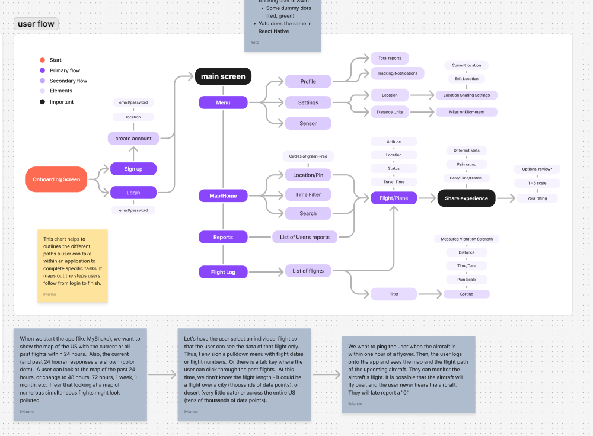
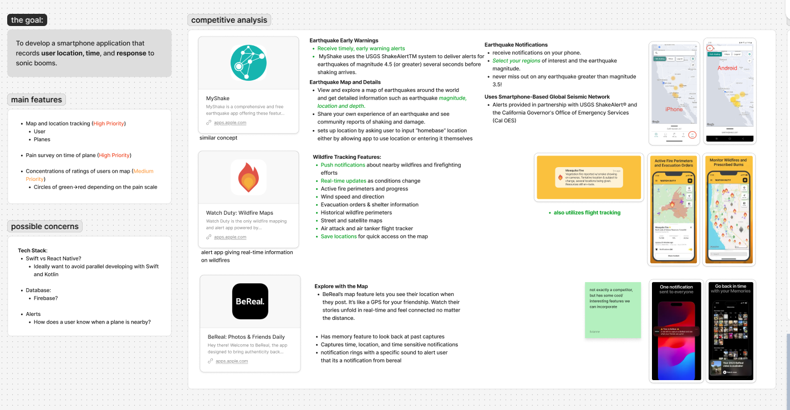
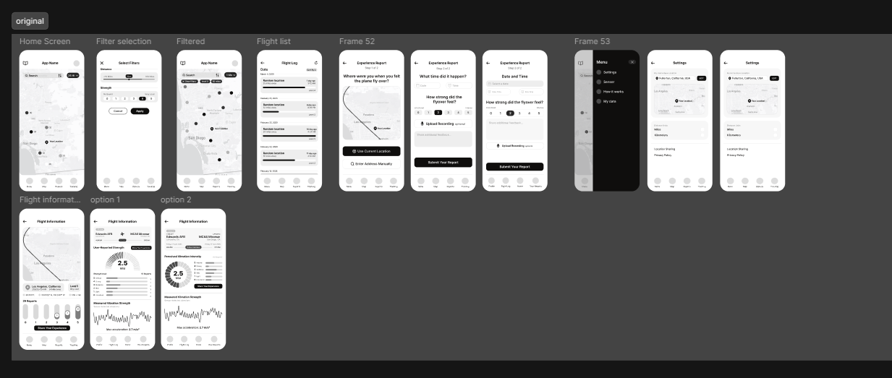

See nearby activity
A location-aware map gives people a starting point for understanding aircraft activity around them.
OVERVIEW
NASA's QUESST mission is exploring how the X-59 can make supersonic flight quieter. The concept I developed with my team focused on the people beneath its flight path: how might they know when an aircraft was nearby, understand what they experienced, and share useful feedback?
As design lead, I helped shape a smartphone experience that connects aircraft activity with community responses. The concept brings together a map, flight history, and a short experience report, making it easier to relate a flight to when and where someone heard it.
THE CHALLENGE
A useful community response depends on context. Someone reporting a sound needs a simple way to say where they were, when it happened, and how strong it felt. At the same time, a map showing many flights or long time ranges can quickly become crowded and difficult to interpret.
I framed the design around two connected needs: help people find relevant aircraft activity, then make it straightforward to submit a timely report about their experience.
MY ROLE
I helped translate the project goal into a mobile product concept, organized the core information architecture, and mapped the paths people could take through the app. I also explored how aircraft activity and community reports could be presented together without overwhelming the map.
The work shown here represents a design concept and prototype—not a released NASA product.
PROCESS
I began by reviewing patterns in adjacent location-based products, including earthquake and wildfire alert tools. Their maps, location settings, notifications, and saved history offered useful references for helping people understand events around them. I also considered how a lightweight, timely prompt could make it easier to share an experience while it was still fresh.
From there, I mapped a flow from onboarding and location setup to the map, flight details, and an experience report. That flow helped me organize the product around a clear sequence: find a flight, understand its context, and report what you experienced.
A location-aware map gives people a starting point for understanding aircraft activity around them.
Selecting a flight keeps its details in focus and avoids asking people to interpret an overloaded map of simultaneous or historical activity.
A guided report collects the time, location, and perceived intensity of a sound, with an optional comment for additional context.



OUTCOME
The resulting concept brings flight information and community feedback into one mobile flow. The map and flight log help people explore aircraft activity; the report flow gives them a structured way to describe what they heard and connect that response to a time and place.
The screens explored different ways to make flight details more legible, including flight paths and measures such as distance, altitude, time, and reported sound intensity. Together, these ideas established a foundation for a more focused prototype and future evaluation.
REFLECTION
This project reminded me that information visualization is as much about deciding what not to show as it is about presenting data. A map that tries to display every flight at once can obscure the one a person is trying to understand. Letting people move from an overview to a selected flight gave the information a clearer structure.
I also learned to treat the report flow as part of the information system, not an add-on. Capturing a response is most useful when people can connect it to a specific time, place, and flight—and when sharing it feels simple in the moment.